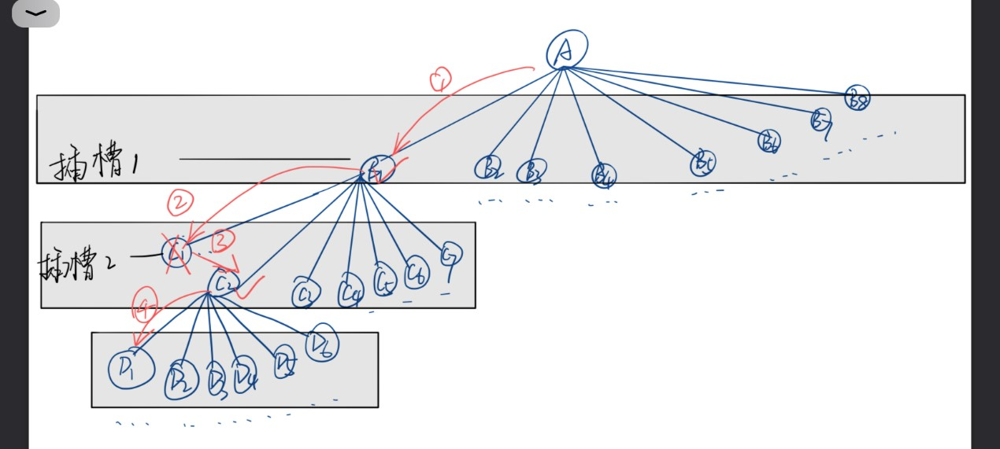

实验要求
利用回溯与分支限界知识完成：
设计原理
该问题所要求的：在n个元素的集合中找出满足某种性质的排列，解空间为排列树。排列树的重点是要确定n个元素的前后次序。
本题的约束条件为：在新加入的结点和其父结点组成的相邻凹槽的连线数不大于排列密度。
画出本题的搜索树如下。
按深度优先策略，从根结点出发搜索排列树，每次加入新的结点时，先判断该结点是否满足约束条件，如果不满足约束条件，则跳过对该结点为根的子树的搜索，逐层向其祖先结点回溯。否则进入该子树，继续按深度优先策略搜索。
由于本题要求出排列密度最小的电路板排列，所以约束条件更加苛刻，即：在新加入的结点和其父结点组成的相邻凹槽的连线数小于排列密度。同时，在每次加入新结点之后，更新该已排好的列中的最大连线数。

最优解证明

注意点
核心代码
void Backtrack(int t,int d0)//回溯算法{
if (t == N)
{
for (int i = 1; i < N+1; i++)
{
bestx[ii][i] = x[i];
}
bestx[ii][0] = d0;
if (d0 < MaxDensity)
{
MaxDensity = d0;
}
ii++;
}
else
{
for (int i = t; i <= N; i++)
{
int d1 = Density(i);
if (d0 > d1)
{
d1 = d0;
}
if (d1<=MaxDensity)
{
swap(x[t], x[i]);//同一层结点的选择，相当于同一位置不同的人坐
Backtrack(t + 1,d1);
swap(x[t], x[i]);//如果下个结点剪枝了，就交换回到最近的父节点，进行下父结点下一个子树的检测。
}
}
}}
实验结果
算法时间复杂度分析
在解空间排列树的每个结点处，需要花费Ο(n)时间计算连线数，回溯算法在最坏情况下可能需要更新当前最优解Ο((n-1)!)次，每次更新最优排列需要时间Ο(n)，因此在最坏情况下整个算法的时间复杂度为Ο(n·n!)
实验总结
回溯算法有点像穷举，但通过分支限界，剪枝策略，使得算法效率比穷举快很多，在每一个结点处判断是否满足约束条件，如不满足，意味着就算再进行下去结果还是不符合条件的，也就是“看到”了最终结果，回溯到其祖先结点。回溯算法虽然可行，但时间复杂度高，耗费的时间多。